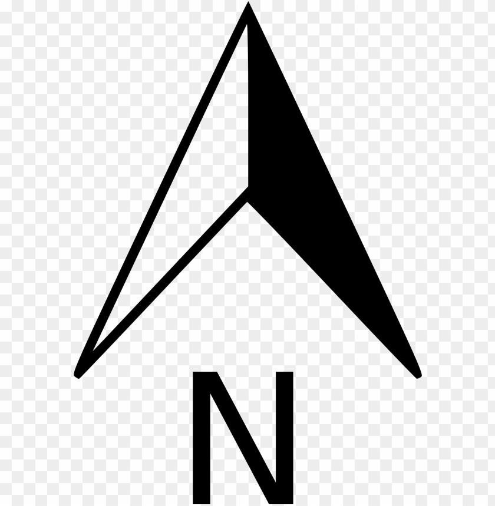

<!DOCTYPE html><html><head><title>RMP-2015</title><meta charset="utf-8"><meta name="viewport" content="width=device-width,initial-scale=1">
<script src="jscss/leaflet-1.4.0.js"></script>
<link href="jscss/leaflet.css" rel="stylesheet">
<script src="jscss/leaflet-hash.js"></script>
<script src="jscss/L.Control.Opacity.js"></script>
<link href="jscss/leaflet-ruler.css" rel="stylesheet">
<script src="jscss/leaflet-ruler.js"></script>
<link href="jscss/leaflet-measure.css" rel="stylesheet">
<script src="jscss/leaflet-measure.js"></script>
<script src="jscss/leaflet-search.js"></script>
<script src="jscss/Villages_2.js"></script>
<link href="jscss/leaflet-search.css" rel="stylesheet">
<link href="jscss/L.Control.Opacity.css" rel="stylesheet">
<link rel="stylesheet" href="https://ppete2.github.io/Leaflet.PolylineMeasure/Leaflet.PolylineMeasure.css" />
<script src="https://ppete2.github.io/Leaflet.PolylineMeasure/Leaflet.PolylineMeasure.js"></script>
<style type="text/css">
body{margin:0;padding:0}#map,body,html{width:100%;height:100%}.info{padding:6px 8px;font:14px/16px Arial,Helvetica,sans-serif;background:#fff;background:rgba(255,255,255,.8);box-shadow:0 0 15px rgba(0,0,0,.2);border-radius:5px}.info h4{margin:0 0 5px;color:#777}
</style>
</head>
<body>
<div id="map"></div>
<script>
    var OpenStreetMap=L.tileLayer("https://tile.openstreetmap.org/{z}/{x}/{y}.png",{
        attribution:"Map data &copy;2022 OpenStreetMap | Terms of Use",
        minZoom:15,
        maxZoom:21
    }),
    RMP=L.tileLayer("{z}/{x}/{y}.png",{
        transparent:!0,
        opacity:.5,
        minZoom:15,
        maxZoom:21,
        tms:!1,
        attribution:"BDA | M.Plan-Smart City Planning(VIAT,Muddenahalli)"
    }),
    googlestreet = L.tileLayer('http://{s}.google.com/vt/lyrs=m&x={x}&y={y}&z={z}',{
        maxZoom: 22,
        subdomains:['mt0','mt1','mt2','mt3']
    }),
    googleSat = L.tileLayer('http://{s}.google.com/vt/lyrs=s&x={x}&y={y}&z={z}',{
        maxZoom: 22,
        subdomains:['mt0','mt1','mt2','mt3']
    }),
    googleHybrid = L.tileLayer('http://{s}.google.com/vt/lyrs=s,h&x={x}&y={y}&z={z}',{
        maxZoom: 22,
        subdomains:['mt0','mt1','mt2','mt3']
    });
    map=L.map("map",{
        zoomSnap:0,
        zoomDelta:.25,
        layers:[OpenStreetMap,googlestreet,RMP]

    }).setView([13.013328310283285,77.54160961494985],15),
    scale=L.control.scale();
    scale.addTo(map);
    var hash=new L.Hash(map);
    legend=L.control();
    legend.onAdd=function(a){
        return div=L.DomUtil.create("div","info legend"),
        div.innerHTML="<h4><b>RMP-2015</b></h4>",div
    },
    legend.addTo(map);
    var Map_BaseLayer={
        OpenStreetMap:OpenStreetMap,
        GoogleStreetMap:googlestreet,
        GoogleSatteliteMap:googleSat,
        GoogleHybridMap:googleHybrid
    },
    Map_AddLayer={"RMP-2015":RMP};
    L.control.layers(Map_BaseLayer,Map_AddLayer).addTo(map),
    L.control.opacity(Map_AddLayer,{label:"Layer Opacity"}).addTo(map);
    var north=L.control({position:"bottomleft"});
    north.onAdd=function(a){
        var e=L.DomUtil.create("div","info legend");
        return e.innerHTML='',e
    },
    north.addTo(map)
    var measureControl = new L.Control.Measure({
            position: 'topleft',
            primaryLengthUnit: 'meters',
            secondaryLengthUnit: 'kilometers',
            primaryAreaUnit: 'sqmeters',
            secondaryAreaUnit: 'acres'
    });
    measureControl.addTo(map);
    var data = json_Villages;

    var featuresLayer = new L.GeoJSON(data, {
			style: function(feature) {
				return {color: feature.properties.color };
			},
			onEachFeature: function(feature, marker) {
				marker.bindPopup('<h4 style="color:'+feature.properties.color+'">'+ feature.properties.V_Nm +'</h4>');
			}
		});

	map.addLayer(featuresLayer);

    var searchControl = new L.Control.Search({
		layer: featuresLayer,
		propertyName: 'V_Nm',
		marker: false,
		moveToLocation: function(latlng, title, map) {
			//map.fitBounds( latlng.layer.getBounds() );
			var zoom = map.getBoundsZoom(latlng.layer.getBounds());
  			map.setView(latlng, zoom); // access the zoom
		}
	});

	searchControl.on('search:locationfound', function(e) {
		
        e.layer.setStyle({fillColor: '#3f0', color: '#0f0'});
		if(e.layer._popup)
			e.layer.openPopup();

	}).on('search:collapsed', function(e) {

		featuresLayer.eachLayer(function(layer) {	//restore feature color
			featuresLayer.resetStyle(layer);
		});	
	});	
	map.addControl( searchControl );
</script>
</body>
</html>
